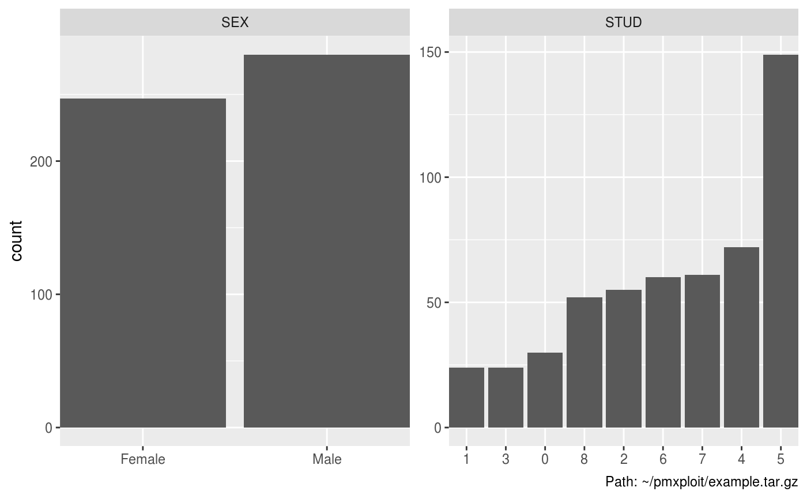

plot_categorical_covariates_distributions.RdPlots the distributions of the selected categorical covariates.
plot_categorical_covariates_distributions(run, covariates = NULL, frequency = FALSE, order = TRUE, drop = FALSE, bar_adjustment = "dodge", baseline_only = TRUE, auto_legend = TRUE)
| run |
|
|---|---|
| covariates | character vector of categorical covariates names. Default is |
| frequency | logical. Plot frequency instead of count on the y-axis. |
| bar_adjustment | character. |
| baseline_only | logical. Consider only the baseline (= first) values of the subjects. Default is
|
| auto_legend | logical. When |
| split_by | character. Name of a categorical covariate used to split the distributions. |
A ggplot2 object.
EXAMPLERUN %>% group_by(SEX) %>% plot_categorical_covariates_distributions(covariates = "STUD", frequency = TRUE)#> Warning: argument is not an atomic vector; coercing